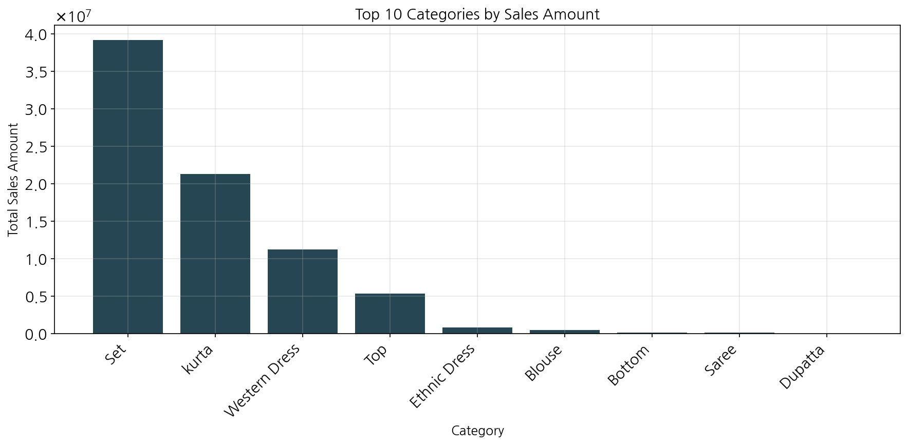
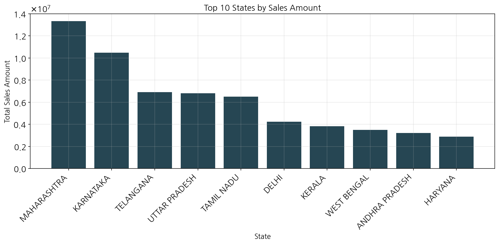
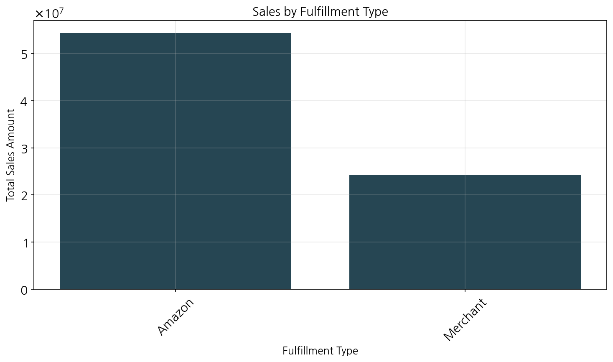
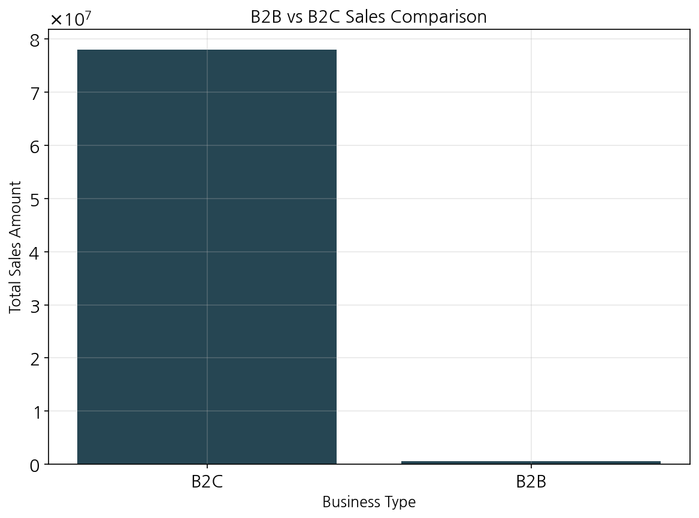
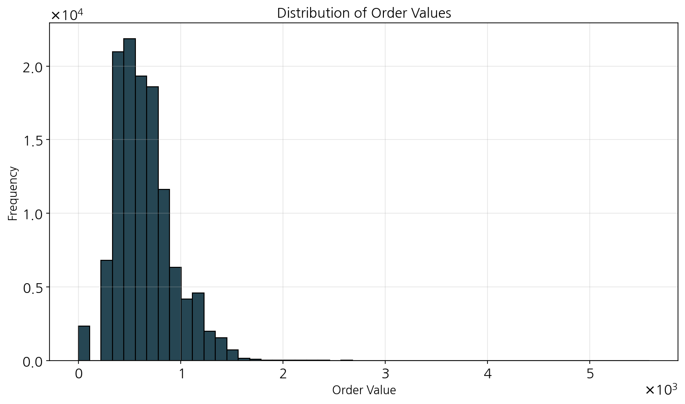
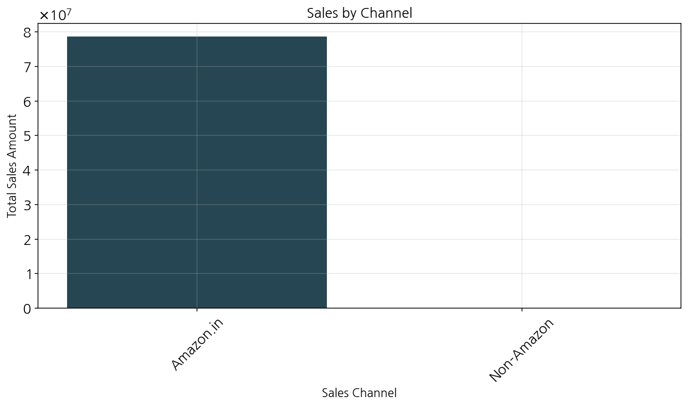
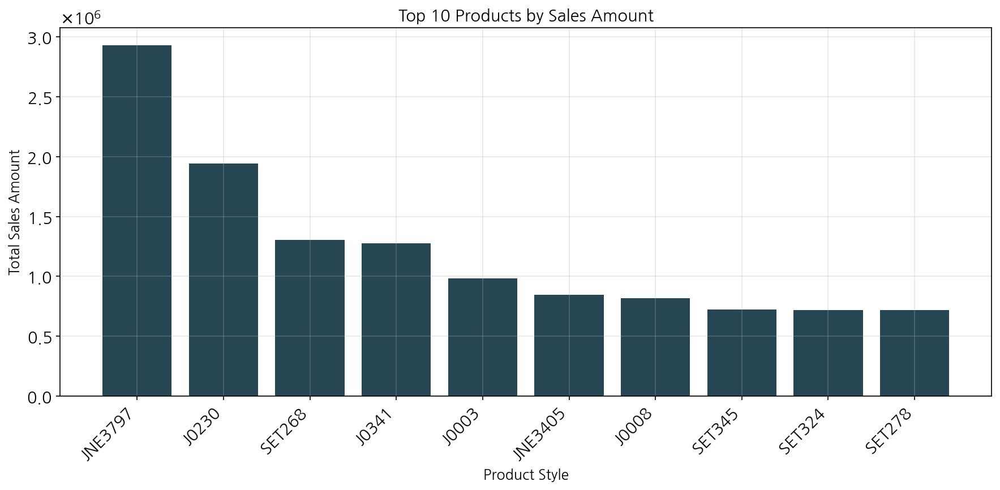

Amazon Product Sales Data Analysis and Marketing Insights
Report generated on: May 07, 2025
Executive Summary
This comprehensive analysis of Amazon sales data examines product performance, sales trends, and customer behavior patterns across various dimensions. The dataset contains 128,975 records spanning 24 columns of sales information. The analysis provides valuable insights into top-performing products, regional sales distribution, fulfillment methods, and order patterns that can inform marketing strategies and business decisions.
With total sales of ₹78,592,678.30 across the analyzed period, the data reveals significant opportunities for growth in specific product categories and regions. Key insights include the dominance of "Set" and "kurta" categories, the importance of Maharashtra and Karnataka markets, and higher average order values in B2B transactions compared to B2C.
Key Findings
1. Product Category Performance
The "Set" category leads sales with ₹39,204,124, followed by "kurta" with ₹21,299,547. Together, these two categories represent approximately 77% of total sales, indicating their crucial importance to the business.
2. Regional Sales Distribution
Maharashtra leads with ₹13,335,534 in sales, followed by Karnataka (₹10,481,114). These two states account for approximately 30% of total sales, suggesting strong market presence in these regions.
3. Fulfillment Analysis
Amazon fulfillment handles 69% of orders (₹54,322,151), while merchant fulfillment accounts for 31% (₹24,270,527). Amazon-fulfilled orders have a slightly higher average order value (₹649.48 vs ₹646.51).
4. B2B vs B2C Sales
B2C dominates with 99.2% of sales volume, but B2B transactions have a higher average order value (₹701.33 vs ₹648.19), indicating potential for targeted B2B growth strategies.
5. Order Status and Cancellations
The cancellation rate is 14.21% (18,332 out of 128,975 orders), which represents a significant portion of potential revenue. Reducing cancellations could substantially improve overall sales performance.
Detailed Analysis
1. Initial Data Exploration
The analysis is based on 128,975 records of Amazon sales data spanning 24 columns. Initial data exploration revealed several important data quality considerations:
- Missing values in several key columns, including Courier Status (6,872), Currency and Amount (7,795 each), and fulfilled-by (89,698)
- Data types include integers, floats, objects (strings), and boolean values
- The dataset contains order information like IDs, dates, status, fulfillment details, product categories, and shipping information
2. Sales Analysis and Visualization
2.1 Daily Sales Trends
The analysis covered 91 days of sales data with the following metrics:
- Average daily sales: ₹863,655.81
- Highest daily sales: ₹1,209,364.17
- Lowest daily sales: ₹101,683.85

Figure 1: Daily sales trend over the analyzed period
2.2 Category Analysis
The top 5 categories by sales are:
| Category |
Total Sales (₹) |
Order Count |
| Set |
39,204,124.03 |
47,042 |
| kurta |
21,299,546.70 |
46,717 |
| Western Dress |
11,216,072.69 |
14,704 |
| Top |
5,347,792.30 |
10,165 |
| Ethnic Dress |
791,217.66 |
1,093 |

Figure 2: Top 10 product categories by sales amount
2.3 Regional Analysis
The top 5 states by sales volume are:
| State |
Total Sales (₹) |
| Maharashtra |
13,335,534.14 |
| Karnataka |
10,481,114.37 |
| Telangana |
6,916,615.65 |
| Uttar Pradesh |
6,816,642.08 |
| Tamil Nadu |
6,515,650.11 |

Figure 3: Top 10 states by sales amount
2.4 Order Status Distribution
The distribution of order statuses in the dataset reveals:
- Shipped: 77,804 orders (60.3%)
- Shipped - Delivered to Buyer: 28,769 orders (22.3%)
- Cancelled: 18,332 orders (14.2%)
- Other statuses (Returned, Pending, etc.): 4,070 orders (3.2%)

Figure 4: Distribution of order statuses
3. Additional Sales Analysis
3.1 Overall Sales Metrics
- Total Sales: ₹78,592,678.30
- Total Orders: 128,975
- Average Order Value: ₹648.56
- Median Order Value: ₹605.00
- Standard Deviation of Order Values: ₹281.21
3.2 Fulfillment Analysis
| Fulfillment Type |
Total Sales (₹) |
Order Count |
Average Order Value (₹) |
| Amazon |
54,322,151.00 |
83,639 |
649.48 |
| Merchant |
24,270,527.30 |
37,541 |
646.51 |

Figure 5: Sales by fulfillment type visualization
3.3 B2B vs B2C Sales
| Sales Type |
Total Sales (₹) |
Order Count |
Average Order Value (₹) |
| B2C (False) |
78,001,457.51 |
120,337 |
648.19 |
| B2B (True) |
591,220.79 |
843 |
701.33 |

Figure 6: Comparison of B2B and B2C sales
3.4 Order Value Distribution

Figure 7: Distribution of order values
3.5 Sales Channel Analysis
All sales analyzed occurred through the Amazon.in channel, with total sales of ₹78,592,678.30 across 121,180 orders. The average order value through this channel is ₹648.56.

Figure 8: Sales by channel visualization
4. Product and Service Analysis
4.1 Top Product Performance
The top 5 products by sales volume:
| Style |
Total Sales (₹) |
Order Count |
Average Order Value (₹) |
Quantity Sold |
| JNE3797 |
2,933,482.00 |
3,995 |
734.29 |
3,692 |
| J0230 |
1,944,948.48 |
1,733 |
1,122.30 |
1,710 |
| SET268 |
1,303,923.56 |
1,732 |
752.84 |
1,731 |
| J0341 |
1,275,322.87 |
1,538 |
829.21 |
1,471 |
| J0003 |
981,973.75 |
1,491 |
658.60 |
1,390 |

Figure 9: Top 10 products by sales amount
4.2 Size Distribution
The distribution of sales by product size:
| Size |
Total Sales (₹) |
Order Count |
| M |
13,906,754.37 |
21,292 |
| L |
13,234,886.19 |
20,800 |
| XL |
12,464,965.86 |
19,726 |
| XXL |
10,636,288.45 |
17,066 |
| S |
10,629,210.18 |
15,953 |

Figure 10: Sales distribution by product size
4.3 Shipping Service Level Analysis
| Shipping Service Level |
Total Sales (₹) |
Order Count |
Average Order Value (₹) |
| Expedited |
54,285,183.00 |
82,723 |
656.23 |
| Standard |
24,307,495.30 |
38,457 |
632.07 |

Figure 11: Analysis of shipping service levels
4.4 Order Status Analysis
The analysis of order statuses revealed:
- Total Orders: 128,975
- Cancelled Orders: 18,332
- Cancellation Rate: 14.21%

Figure 12: Detailed order status distribution analysis
Conclusions and Recommendations
Conclusions:
- Product Focus: The "Set" and "kurta" categories dominate sales, suggesting these are the core product lines. These two categories account for approximately 77% of total sales.
- Regional Strength: Maharashtra and Karnataka are the strongest markets, accounting for approximately 30% of total sales. This indicates regional preferences or stronger market penetration in these areas.
- Size Preferences: Medium (M) and Large (L) sizes are the most popular, suggesting the target demographic preferences. The top three sizes (M, L, XL) account for 51% of orders.
- Fulfillment Performance: Amazon fulfillment handles the majority (69%) of orders with slightly better average order values than merchant fulfillment.
- B2B Potential: While B2B sales represent only a small portion of overall business (0.8%), they show a higher average order value (₹701.33 vs ₹648.19), indicating potential for growth in this segment.
- Cancellation Impact: The 14.21% cancellation rate represents a significant potential revenue loss and area for operational improvement.
Recommendations:
- Product Strategy:
- Focus marketing efforts on the high-performing "Set" and "kurta" categories while exploring opportunities to grow the "Western Dress" category.
- Analyze the top-selling products (especially JNE3797 and J0230) to identify common characteristics that can be replicated in new product development.
- Consider expanding the size range for popular products, focusing on the most demanded sizes (M, L, XL).
- Regional Marketing:
- Develop targeted marketing campaigns for Maharashtra and Karnataka to reinforce market leadership.
- Create specific strategies to increase market share in high-potential states like Telangana, Uttar Pradesh, and Tamil Nadu.
- Consider regional preferences in product design and marketing messaging to better connect with local customers.
- Operational Improvements:
- Investigate the causes of the 14.21% cancellation rate and implement measures to reduce it, potentially focusing on product accuracy, delivery timeframes, or customer communication.
- Expand the use of Amazon fulfillment given its slightly better performance in terms of average order value.
- Optimize inventory based on size distribution data to prevent stockouts of popular sizes.
- Business Development:
- Develop a dedicated B2B strategy to capitalize on the higher average order values in this segment.
- Consider bundle offers for top-performing products to increase average order value.
- Explore the potential of expedited shipping as a premium service, given its higher average order value compared to standard shipping.
- Data-Driven Decision Making:
- Implement regular monitoring of daily sales trends to identify patterns, seasonality, or anomalies that can inform inventory and marketing decisions.
- Set up tracking for key performance indicators like cancellation rate, regional sales distribution, and category performance to measure improvement over time.